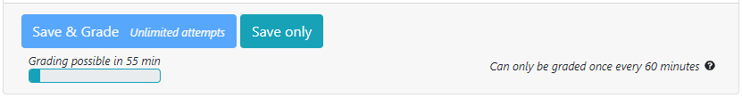

Jonatan Schroeder continues his excellent work with another new feature! PrairieLearn now allows instructors to set a minimum time that students must wait between grading their answers to a question. For the student this looks like:

Saving answers is still allowed when a grading rate limit is in effect for a question, but the question can't be graded again until either the waiting time has elapsed, or when the assessment finishes.
To configure a grading rate limit, set the gradeRateMinutes key in
infoAssessment.json. This indicates how long a student needs to wait after grading a
question to resubmit a new answer to the same question for grading and it can be set at different
levels of the assessment, with lower levels overriding higher ones. For example:
"zones": [
{
"gradeRateMinutes": 30,
"questions": [
{"id": "canOnlySubmitEvery30minutes", "points": 10},
{"id": "canOnlySubmitEvery60minutes", "points": 10, "gradeRateMinutes": 60},
{"id": "canSubmitAnytime", "points": 10, "gradeRateMinutes": 0}
]
}
],
The motivation behind grading rate limits is to prevent mindless trial-and-error problem solving. While we know that practice is key for learning and that it's important to allow room for mistakes and repeated attempts, it's also valuable to compel students to evaluate, experiment and test their own work, and to encourage reflection and thinking between solution attempts. To achieve this, controlling resubmissions can be an effective tool (Ihantola et. al. 2010, "Review of Recent Systems for Automatic Assessment of Programming Assignments"), such as by limiting the grading rate.
Additional information about grading rate limits can be found in the PrairieLearn documentation page.